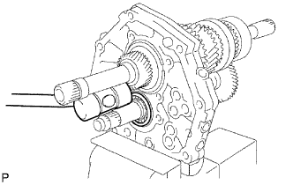
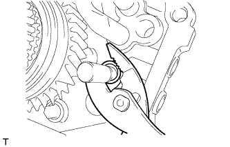
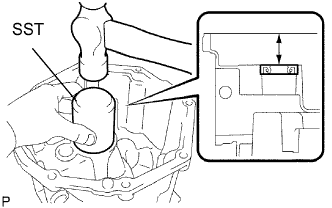

БЛОК МЕХАНИЧЕСКОЙ ТРАНСМИССИИ > ПОВТОРНАЯ СБОРКА |
| 1. INSTALL OUTPUT SHAFT ASSEMBLY |
Install the output shaft to the intermediate plate by pushing on the output shaft and tapping on the intermediate plate with a plastic-faced hammer.
Using a snap ring expander, install the snap ring to the center bearing.
| 2. INSTALL INPUT SHAFT ASSEMBLY |
Coat the input shaft and No. 2 synchronizer ring with gear oil, and install them to the output shaft.
| 3. INSTALL COUNTER GEAR ASSEMBLY |
Coat the input shaft and No. 2 synchronizer ring with gear oil.
Temporarily install the counter gear, input shaft and a new center bearing to the intermediate plate.
|  |
Using a plastic-faced hammer, install the center bearing to the intermediate plate by tapping the outer race to the counter gear center bearing.
Using a snap ring expander, install the counter shaft center bearing snap ring to the counter shaft center bearing.
| 4. INSTALL OUTPUT SHAFT REAR BEARING RETAINER |
Using a T40 "TORX" socket, install the output shaft rear bearing retainer to the intermediate plate with the 4 screws.
| 5. INSTALL REVERSE IDLER GEAR SUB-ASSEMBLY |
Install the reverse idler gear shaft and reverse idler gear to the intermediate plate.
Install the reverse idler gear shaft stopper to the intermediate plate with the bolt.
| 6. INSTALL REVERSE SHIFT ARM BRACKET |
Install the reverse shift arm bracket to the intermediate plate with the 2 bolts.
| 7. INSTALL 5TH GEAR BEARING INNER RACE LOCK BALL |
Install the lock ball.
| 8. INSTALL 5TH GEAR THRUST WASHER |
Install the 5th gear thrust washer.
| 9. INSTALL NO. 3 TRANSMISSION HUB SLEEVE |
Coat the counter shaft 5th gear with gear oil.
Install the counter 5th gear, counter shaft 5th gear bearing, 3 synchromesh shifting keys, 2 synchromesh shifting key springs and No. 3 transmission hub sleeve.
| *1 | No. 3 Transmission Hub Sleeve |
| *2 | No. 3 Synchromesh Shifting Key Spring |
| *3 | Counter Shaft 5th Gear Bearing |
| *4 | No. 3 Synchromesh Shifting Key |
| *5 | Counter Shaft 5th Gear |
 | Front |
| 10. INSTALL COUNTER SHAFT 5TH GEAR |
Install the counter 5th gear bearing to the 5th gear.
Install the counter shaft 5th gear to the counter gear.
Temporarily install the No. 1 synchronizer ring on the No. 5 gear spline piece.
Remove the intermediate plate from the vise.
Stand the transmission as shown in the illustration.
Using a press and 22 mm socket wrench, install the No. 5 gear spline piece with the No. 1 synchronizer ring slots aligned with the shifting keys.
Fix the intermediate plate in a vise between aluminum plates.
Select a snap ring that will allow minimal axial play.
| Mark | Thickness |
| A | 2.80 to 2.85 mm (0.110 to 0.112 in.) |
| B | 2.85 to 2.90 mm (0.112 to 0.114 in.) |
| C | 2.90 to 2.95 mm (0.114 to 0.116 in.) |
| D | 2.95 to 3.00 mm (0.116 to 0.118 in.) |
| E | 3.00 to 3.05 mm (0.118 to 0.120 in.) |
| F | 3.05 to 3.10 mm (0.120 to 0.122 in.) |
| G | 3.10 to 3.15 mm (0.122 to 0.124 in.) |
Using a brass bar and hammer, tap the snap ring to the counter gear.
| 11. INSPECT COUNTER SHAFT 5TH GEAR THRUST CLEARANCE |
 |
Using a feeler gauge, measure the counter shaft 5th gear thrust clearance.
| 12. INSTALL NO. 2 GEAR SHIFT FORK SHAFT |
Install the No. 2 gear shift fork and No. 1 gear shift fork.
Pass the No. 2 gear shift fork shaft through the intermediate plate, No. 2 gear shift fork and No. 1 gear shift fork to install it.
 |
Using a brass bar and hammer, tap the shaft snap ring onto the No. 2 gear shift fork shaft.
Install the bolt to the No. 2 gear shift fork.
| 13. INSTALL NO. 2 SHIFT INTERLOCK PIN |
Coat the No. 2 shift interlock pin with MP grease and install it to the No. 1 gear shift fork shaft.
| 14. INSTALL NO. 1 GEAR SHIFT FORK SHAFT |
Coat the No. 1 shift interlock pin with MP grease.
Using a magnet hand, install the No. 1 shift interlock pin to the intermediate plate.
Pass the No. 1 gear shift fork shaft through the intermediate plate and No. 2 gear shift fork to install it.
Install the bolt to the No. 1 shift fork.
 |
Using pliers, install the shaft snap ring to the No. 1 gear shift fork shaft.
| 15. INSTALL REVERSE SHIFT ARM |
 |
Install the shift arm shoe E-ring and the shift arm shoe to the reverse shift arm.
Install the reverse shift arm E-ring and reverse shift fork to the reverse shift arm.
Install the reverse shift arm to the reverse shift arm bracket.
| 16. INSTALL NO. 2 SHIFT INTERLOCK PIN |
Coat the No. 2 shift interlock pin with MP grease, and install it to the No. 3 gear shift fork shaft.
| 17. INSTALL NO. 3 SHIFT INTERLOCK PIN |
Coat the No. 3 shift interlock pin with MP grease.
Using a magnet hand, install the No. 3 shift interlock pin to the intermediate plate.
| 18. INSTALL NO. 3 GEAR SHIFT FORK SHAFT |
Install the No. 3 gear shift fork shaft through the reverse shift fork and intermediate plate.
|  |
Install the reverse shift head ring to the reverse shift fork shaft.
Using a 5 mm pin punch and a hammer, tap in the slotted spring pin to the No. 3 shift fork shaft.
| 19. INSTALL NO. 5 GEAR SHIFT FORK SHAFT |
Install the No. 5 gear shift fork shaft and reverse shift head.
Using a 5 mm pin punch and hammer, tap in the slotted spring pin to the No. 3 shift fork shaft.
| 20. INSTALL NO. 4 GEAR SHIFT FORK SHAFT |
Coat the 2 shift detent balls with MP grease.
Using a magnet hand, install the 2 shift detent balls to the intermediate plate.
Pass the No. 4 gear shift fork shaft through the reverse shift fork, intermediate plate and reverse shift head to install it.
Install a new No. 3 gear shift fork with the bolt.
| 21. INSTALL NO. 2 SHIFT DETENT BALL |
 |
Coat the No. 2 detent ball with MP grease.
Install the No. 2 detent ball and compression spring to the intermediate plate.
Coat the spring seat with adhesive.
Using a T40 "TORX" socket, install the spring seat to the intermediate plate.
| 22. INSTALL SHIFT DETENT BALL |
Coat the 3 shift detent balls with MP grease, and then install them and the 3 compression springs to the intermediate plate.
Coat the spring seat and 2 ball plugs with adhesive.
Using a T40 "TORX" socket, install the spring seat and 2 ball plugs to the intermediate plate.
| 23. INSTALL MANUAL TRANSMISSION CASE |
Apply seal packing to the transmission case as shown in the illustration.
| *1 | Seal Packing |
Stand the intermediate plate as shown in the illustration.
Using a plastic-faced hammer, install the transmission case to the intermediate plate as shown in the illustration.
| 24. INSTALL NO. 1 COUNTER GEAR FRONT BEARING SNAP RING |
Using a snap ring expander, install the snap ring to the counter gear front bearing.
| 25. INSTALL FRONT BEARING SHAFT SNAP RING |
Using a snap ring expander, install the snap ring to the input shaft front bearing.
| 26. INSTALL TRANSMISSION FRONT BEARING RETAINER OIL SEAL |
Using SST, press in a new oil seal to the front bearing retainer.
| *a | Oil Seal Depth |
Apply a light coat of MP grease to the lip of the oil seal.
| 27. INSTALL FRONT BEARING RETAINER |
Install a new gasket and the front bearing retainer to the transmission case.
Install the 8 bolts.
| 28. INSTALL TRANSFER ADAPTER OIL SEAL |
|  |
Using SST, tap in a new oil seal to the transfer adaptor.
Apply a light coat of MP grease to the lip of the oil seal.
| 29. INSTALL NO. 1 REVERSE RESTRICT PIN ASSEMBLY |
Install the restrict pin to the transfer adaptor.
Using a 5 mm pin punch and hammer, tap in the slotted spring pin to the transfer adaptor.
Using a T40 "TORX" socket, install the plug to the transfer adaptor.
| 30. INSTALL SHIFT AND SELECT LEVER |
 |
Install the shift and select lever and shift lever housing to the transfer adaptor.
| *1 | Shift Lever Housing |
| *2 | Shift and Select Lever |
| 31. INSTALL TRANSFER OIL RECEIVER PIPE |
Install the oil receiver pipe to the transfer adaptor.
| 32. INSTALL TRANSMISSION MAGNET |
Install the magnet to the transfer adaptor.
| 33. INSTALL TRANSFER ADAPTER |
Apply seal packing to the transfer adaptor as shown in the illustration.
| *1 | Seal Packing |
Install the transfer adaptor to the manual transmission case with the 8 bolts.
Install the bolt to the shift lever housing.
| 34. INSTALL SHIFT DETENT BALL |
Coat the shift detent ball with MP grease, and then install it and the compression spring to the transfer adapter.
Using a T40 "TORX" socket, install the spring seat to the transfer adapter.
| 35. INSTALL FLOOR SHIFT CONTROL SHIFT LEVER RETAINER SUB-ASSEMBLY |
Install a new gasket to the transfer adapter.
Install the shift lever retainer with the 4 bolts.
| 36. INSTALL RESTRICT PIN |
Install the 2 restrict pins to the transfer adaptor.
| 37. INSTALL FRONT TRANSMISSION CASE |
 |
Install the front transmission case.
Apply adhesive to the bolt threads.
Install the 9 bolts.
| 38. INSTALL BACK-UP LIGHT SWITCH ASSEMBLY |
Using SST, install a new gasket and the back-up light switch to the manual transmission case.
| 39. INSTALL CLUTCH RELEASE FORK BOOT |
Install the release fork boot to the front transmission case.
| 40. INSTALL RELEASE FORK SUPPORT |
Install the release fork support to the front transmission case.
| 41. INSTALL CLUTCH RELEASE BEARING ASSEMBLY |
Apply release hub grease to the clutch release bearing, and then install it to the clutch release fork with the clip.
| *a | Release hub grease |
| 42. INSTALL CLUTCH RELEASE FORK SUB-ASSEMBLY |
Install the clutch release fork.
Apply clutch spline grease to the spline of the input shaft.
| *a | Clutch spline grease |
| 43. INSTALL DRAIN PLUG SUB-ASSEMBLY |
Install a new gasket and the drain plug to the transmission case.
| 44. INSTALL MANUAL TRANSMISSION FILLER PLUG |
Install a new gasket and the filler plug to the transmission case.